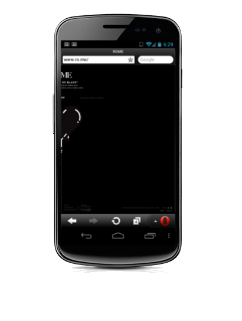

Greg Schechter
The Web Warrior
schechter@youtube.com
Zoltan Szego
Phone Wrangler
zszego@google.com
What's Google IO about?
I R one C00LZ Kat
Last year's coolness
This year's awesome hardware
Put them together
Put them together

Is the coolness ready to use?
I's ready for battlez
-
Graphics
-
Connectivity
-
CSS3 Styling
-
Device Access
-
Multimedia
-
Offline and Storage
-
Performance and Integration
-
Semantics
Who can use this stuff?
Depends on your users
What users I prioritize development for
When I was in school
My last job
YouTube
Chrome
Firefox
Safari
Opera
IE
Why HTML5?
CSS3 Styling
Rounded Corners
<style>
.somebox {
border-radius: 3px;
}
</style>
With awesomeness
Without awesomeness
Transitions
<style>
.somebox {
-webkit-transition: height 1s, opacity 1s 1s;
-moz-transition: height 1s, opacity 1s 1s;
-ms-transition: height 1s, opacity 1s 1s;
-o-transition: height 1s, opacity 1s 1s;
transition: height 1, opacity 1s 1s;
}
</style>
With Awesomeness
Awesome Information
New Awesome Information
Without Awesomeness
Awesome Information
New Awesome Information
What CSS3 gets us
- Enhance the user experience
- Less code
- Faster preformance
- Less wasted development time and less hacks
- The experience without it is still good
Why HTML5?
When HTML5?
Who can use the css3 coolness.
Rounded Corners
Transitions
Chrome
Firefox
Safari
Opera
IE
~85%
~70%
Performance &
Integration
Let's talk Uploads
XHR Uploads
<script>
function upload(blobOrFile) {
var xhr = new XMLHttpRequest();
xhr.open('POST', '/server', true);
xhr.onload = function(e) { ... };
// Listen to the upload progress.
var progressBar = document.querySelector('progress');
xhr.upload.onprogress = function(e) {
if (e.lengthComputable) {
progressBar.value = (e.loaded / e.total) * 100;
progressBar.textContent = progressBar.value; // Fallback for unsupported browsers.
}
};
xhr.send(blobOrFile);
}
</script>
XHR Uploads
Oldness
Upload progressNewness
Upload progressWhy is XHR Uploads an improvement
- Richer user experience with progress updates
- Multiple file uploads
- Resumable uploads
- No plugin required for advanced features
Who can use the XHR upload coolness.
Chrome
Firefox
Safari
Opera
IE
~75%
Time to up the coolness
So is the coolness ready?
Yes
And not only do your users want it, they need it
<Thank You!>
Greg Schechter
Zoltan Szego
www.youtube.com/dev